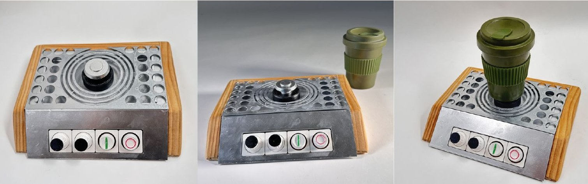
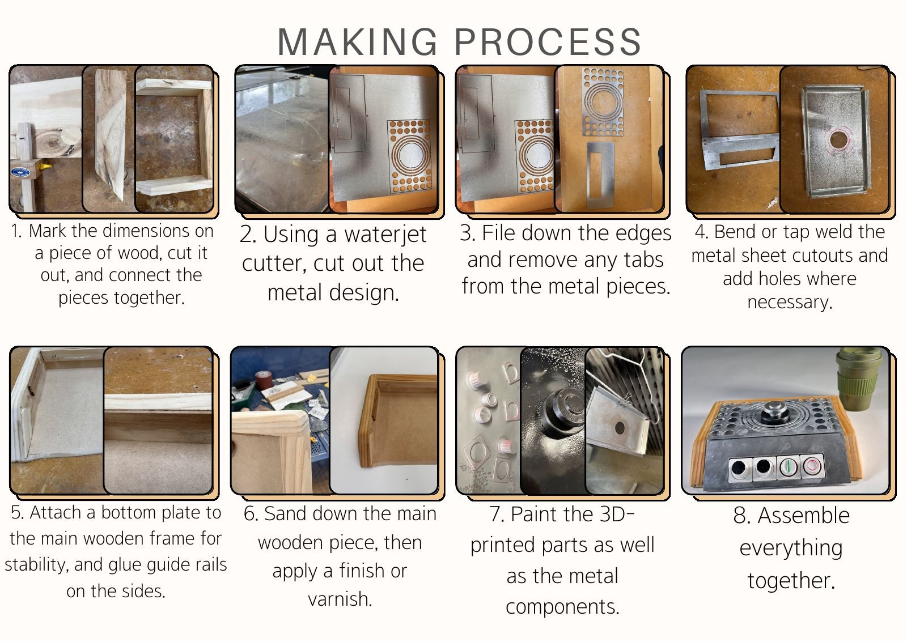

The brief
Help visually impaired people get water safely, without spills or burns, with something that looks good in any kitchen.
Pouring from a kettle relies on sight, wrist strength and steady hands. The people I interviewed, including older users and people with limited vision, described hesitation, near-misses and spills. It also affects people with arthritis or Parkinson's.
BottomsUp flips the problem: place the cup, pick a temperature and amount, press start, and the cup fills from the bottom, through a sealed base that opens on the nozzle and closes again when lifted.
Research
I photographed every step of making tea to see where things go wrong, then designed against seven principles for low-vision users: comprehension, tactile, adjustment, simplicity, safety, social and budget.
Research into controls for older users set the interface:
- Press force1.2–2.5 N, softer than standard switches, for arthritic hands
- Button travel1.0–2.5 mm for clear feedback without strain
- Rotary dials25–100 mm long, about 50° between settings
- Push buttons10–25 mm diameter, about 50 mm apart
Prototypes
Prototype 1 had awkward button placement, no drainage, too much surface area and a plain cup. I angled the button panel, added drainage channels and refined the cup.
Prototype 2 still needed better drainage, and testers found the buttons confusing. Feedback asked for dials for water level and temperature and separate start/stop buttons, so I moved from push buttons to rotary dials.
The final controls take cues from a smart thermostat and the Teenage Engineering OP-1: grooved dials with coloured caps, a green "start" line and a red "stop" circle that you can feel as well as see.

Making it
The body is waterjet-cut sheet aluminium, filed, bent and tack-welded, with a perforated drip tray. It sits in a red oak frame with guide rails, sanded and finished. The dials, buttons and nozzle are 3D printed and painted.
Inside, the full product would use a heating element with a thermostat capped at a safe 45–50 °C, a solenoid valve, a flow meter to stop at the chosen amount, and a pressure regulator for a slow, splash-free fill.

Portfolio
Pages from my portfolio. Click a page to open it.